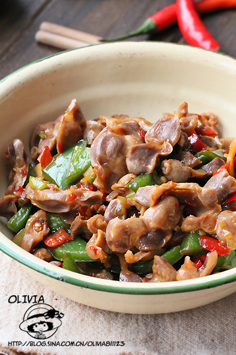

Spicy Chicken Gizzards

Descriptions
Spicy chicken gizzards, this is a Chinese-style dish.
Many Asian young people like chicken gizzards very
much because they are crunchy and chewy. Chicken gizzard
is not only a good partner for drinking, but also
a snack for young people nowadays, its nutritional value
is also very high.
Ingredients
- 300 gram chicken gizzards
- 2 green peppers
- 5 chili peppers
- moderate oil and salt
- green onion
- 2 slices of ginger
- 2 cloves of garlic
- 1 tablespoon of sichuan bean paste
- 1 tablespoon of lightsoy sauce
- 2 tablespoons of cooking wine
- 10 peppercorns
Steps
- Remove the white fascia on the chicken gizzard,
soak it in water to remove blood. Fresh chicken gizzards
are full of elasticity and luster, and the appearance is
red or purple. The stale chicken gizzards are black-red,
inelastic and shiny, and the flesh is soft.
I don't recommend buying.
- Cut the chicken gizzards into thin slices,
place them in a bowl, add 1 spoon of cooking wine and
marinate for 10 minutes to remove fishy smell.
- Cut green peppers and chili peppers into chili rings,
and prepare green onions, garlic, and ginger.
- Bring the water to a boil, add the peppercorns and cook
for 2-3 minutes. Remove the peppercorns and throw them away.
Then boil the chicken gizzards for about 1 minute, take them
out of the pot, put them in cold water to cool, and get the c
hicken gizzards of dry moisture.
- Heat up the pan with oil, add Sichuan bean paste and
stir-fry for a while. Add green onion, minced ginger and
garlic slices.
- Add chicken gizzards and stir-fry for about 1 minute on
high heat. Pour in soy sauce and the remaining 1 tablespoon
of cooking wine, stir-fry evenly.
- Finally, add the chili rings and salt,
stir quickly and evenly over high heat.